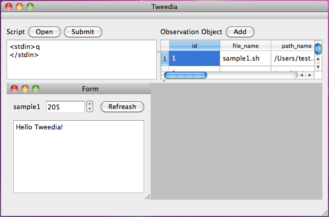

Welcome to Tweedia!
概要
Tweedia is a GUI-base shell tool specialized for analyzing results of called programs.
Tweediaは、実行プログラムの出力内容の分析に特化したGUIベースのシェルツールです。
Screenshot
スクリーンショット

Requirement
動作環境
Operaiton of Tweedia is validated on Mac OS X (Snow Leoperd).
Mac OS X (Snow Leoperd)で動作確認しています。
Download
ダウンロード
Note
備考
-
Tweedia is a free software distributed under GPL.
GPLで配布しています。
-
Tweedia uses C++ and Qt.
C++とQtで開発しています。